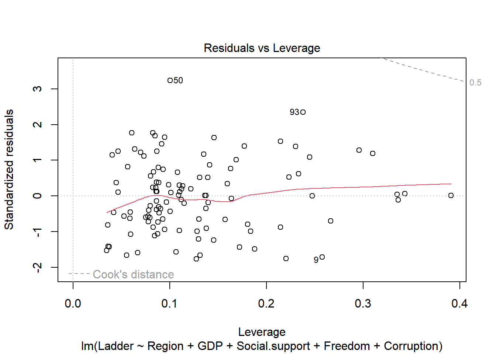
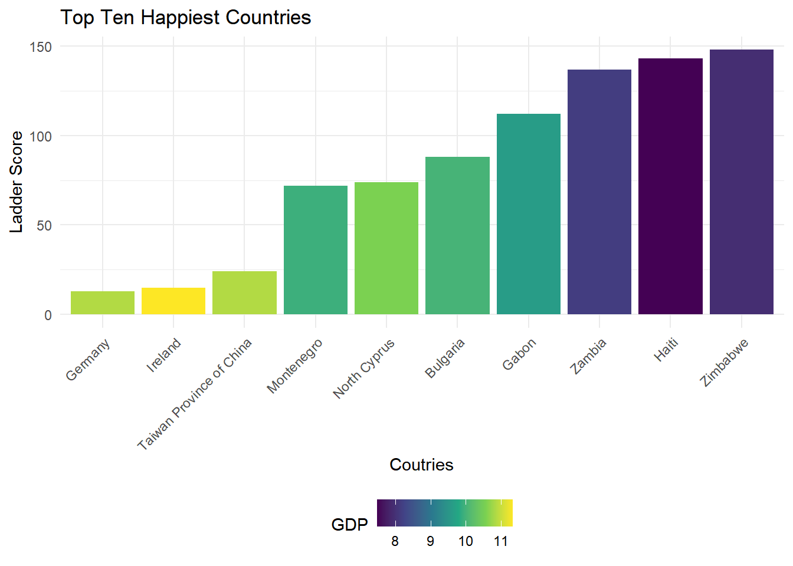
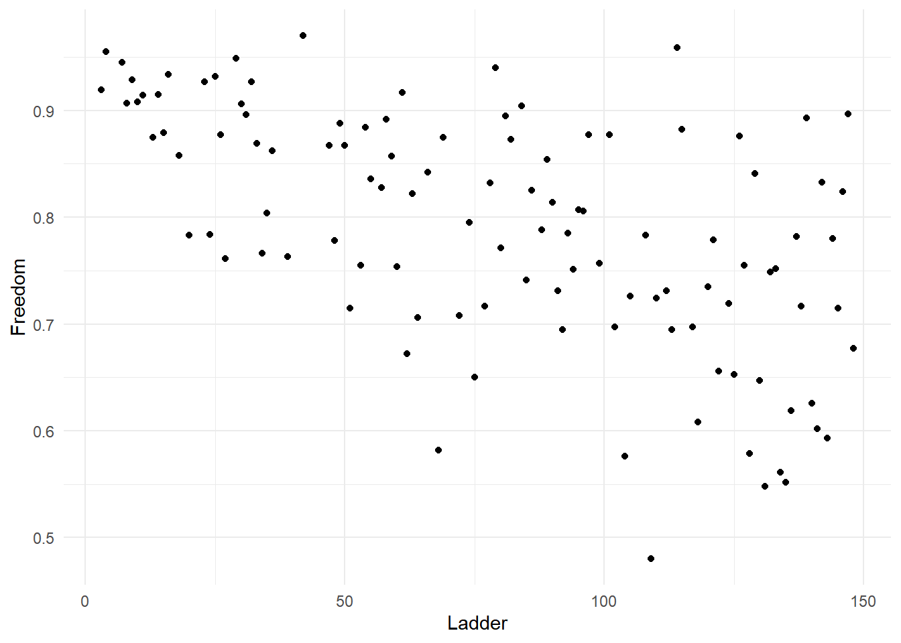
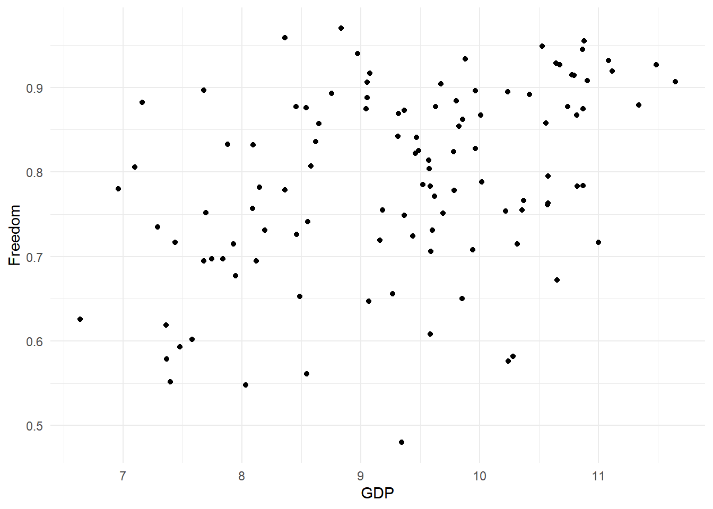

Regression analysis
Since our goal is to explore what kinds of features might influence and best predict our outcome - ladder score. I am considering a multiple linear regression to see how variables relate to the outcome. Once important question that I am interested in is how much does GDP impacts the Ladder Score, and does anything interact with GDP. Here we mainly focus on our latest data - happiness report from 2021.
Outcome: Ladder score
- Rename the column name
regression_df$country_name <- as.factor(regression_df$country_name)
regression_df$regional_indicator<- as.factor(regression_df$regional_indicator)
regression_df <- regression_df %>%
rename(Country = country_name, Region = regional_indicator, Ladder = ladder_score,
SD.Ladder = standard_error_of_ladder_score, GDP = logged_gdp_per_capita, Social.support = social_support,
Life.exp = healthy_life_expectancy, Freedom = freedom_to_make_life_choices,
Corruption = perceptions_of_corruption, Ladder.Dystopia = ladder_score_in_dystopia,
EXP.LOG.GPD = explained_by_log_gdp_per_capita, EXP.SS = explained_by_social_support,
EXP.HLE = explained_by_healthy_life_expectancy, EXP.FREE = explained_by_freedom_to_make_life_choices,
EXP.GEN = explained_by_generosity, EXP.CUR = explained_by_perceptions_of_corruption,
DYS.RES = dystopia_residual)
hap <- regression_df[,-c(4,5,6,13:20)]
colnames(hap)## [1] "Country" "Region" "Ladder" "GDP"
## [5] "Social.support" "Life.exp" "Freedom" "generosity"
## [9] "Corruption"hap <- hap %>%
dplyr::mutate(Ladder = row_number())
head(hap)## # A tibble: 6 × 9
## Country Region Ladder GDP Socia…¹ Life.…² Freedom gener…³ Corru…⁴
## <fct> <fct> <int> <dbl> <dbl> <dbl> <dbl> <dbl> <dbl>
## 1 Finland Western Euro… 1 10.8 0.954 72 0.949 -0.098 0.186
## 2 Denmark Western Euro… 2 10.9 0.954 72.7 0.946 0.03 0.179
## 3 Switzerland Western Euro… 3 11.1 0.942 74.4 0.919 0.025 0.292
## 4 Iceland Western Euro… 4 10.9 0.983 73 0.955 0.16 0.673
## 5 Netherlands Western Euro… 5 10.9 0.942 72.4 0.913 0.175 0.338
## 6 Norway Western Euro… 6 11.1 0.954 73.3 0.96 0.093 0.27
## # … with abbreviated variable names ¹Social.support, ²Life.exp, ³generosity,
## # ⁴Corruption- check NA
sum(is.na(regression_df)) # there is no na## [1] 0We first rename the column name for further use and check if there is NA. It turns out that no NA is in our dataset. What’s worth mentioning is that we transform the ladder score according to their rank(largest score as rank 1) to have a better understanding when comparing them.
Correlations between each variables
Now, we check the correlations between each of the variables, and then we print the correlation matrix and plot the correlation graph.
num.var <- select_if(hap, is.numeric)
M<-cor(num.var)
M## Ladder GDP Social.support Life.exp Freedom
## Ladder 1.00000000 -0.7969875 -0.7510240 -0.7759416 -0.6064113
## GDP -0.79698747 1.0000000 0.7852987 0.8594606 0.4323235
## Social.support -0.75102401 0.7852987 1.0000000 0.7232561 0.4829298
## Life.exp -0.77594156 0.8594606 0.7232561 1.0000000 0.4614939
## Freedom -0.60641135 0.4323235 0.4829298 0.4614939 1.0000000
## generosity 0.03966234 -0.1992864 -0.1149459 -0.1617503 0.1694374
## Corruption 0.40065425 -0.3423374 -0.2032070 -0.3643735 -0.4013630
## generosity Corruption
## Ladder 0.03966234 0.4006543
## GDP -0.19928640 -0.3423374
## Social.support -0.11494585 -0.2032070
## Life.exp -0.16175028 -0.3643735
## Freedom 0.16943737 -0.4013630
## generosity 1.00000000 -0.1639617
## Corruption -0.16396173 1.0000000corrplot(M)
Model selection
First, we split the data into a training and validation set and star our analysis
Then, We choose to use North America and ANZ as a reference group for comparision
str(hap$Region)## Factor w/ 10 levels "Central and Eastern Europe",..: 10 10 10 10 10 10 10 10 6 10 ...levels(hap$Region)## [1] "Central and Eastern Europe" "Commonwealth of Independent States"
## [3] "East Asia" "Latin America and Caribbean"
## [5] "Middle East and North Africa" "North America and ANZ"
## [7] "South Asia" "Southeast Asia"
## [9] "Sub-Saharan Africa" "Western Europe"hap$Region<-relevel(hap$Region, ref="North America and ANZ")
Full model
m1 <- lm(Ladder ~ ., data = train[,-1])
print(m1)##
## Call:
## lm(formula = Ladder ~ ., data = train[, -1])
##
## Coefficients:
## (Intercept)
## 297.8030
## RegionCommonwealth of Independent States
## 25.7677
## RegionEast Asia
## 11.8555
## RegionLatin America and Caribbean
## -9.0051
## RegionMiddle East and North Africa
## 24.5459
## RegionNorth America and ANZ
## -6.8523
## RegionSouth Asia
## 40.0499
## RegionSoutheast Asia
## 28.3348
## RegionSub-Saharan Africa
## 22.9253
## RegionWestern Europe
## -5.7477
## GDP
## -12.7875
## Social.support
## -75.4024
## Life.exp
## 0.0648
## Freedom
## -90.8450
## generosity
## -8.6442
## Corruption
## 22.5704
Null model
Looking at the null model, which is just the intercept (mean) of the outcome variable.
null <- lm(Ladder ~ 1, data = train[,-1])
print(null)##
## Call:
## lm(formula = Ladder ~ 1, data = train[, -1])
##
## Coefficients:
## (Intercept)
## 79.96
Use stepwise comparision procedure
select the model with the lowest AIC, which uses a model’s maximum likelihood estimation (log-likelihood) as a measure of fit.
step(m1)## Start: AIC=682.56
## Ladder ~ Region + GDP + Social.support + Life.exp + Freedom +
## generosity + Corruption
##
## Df Sum of Sq RSS AIC
## - Life.exp 1 3.0 38968 680.57
## - generosity 1 138.0 39103 680.95
## <none> 38965 682.56
## - Corruption 1 876.2 39841 683.03
## - Social.support 1 2347.2 41312 687.05
## - GDP 1 4223.1 43188 691.98
## - Freedom 1 5744.3 44709 695.82
## - Region 9 17659.0 56624 706.05
##
## Step: AIC=680.57
## Ladder ~ Region + GDP + Social.support + Freedom + generosity +
## Corruption
##
## Df Sum of Sq RSS AIC
## - generosity 1 145.1 39113 678.98
## <none> 38968 680.57
## - Corruption 1 897.6 39866 681.10
## - Social.support 1 2352.7 41321 685.07
## - GDP 1 5008.9 43977 691.99
## - Freedom 1 5748.4 44717 693.84
## - Region 9 19488.8 58457 707.58
##
## Step: AIC=678.98
## Ladder ~ Region + GDP + Social.support + Freedom + Corruption
##
## Df Sum of Sq RSS AIC
## <none> 39113 678.98
## - Corruption 1 970.9 40084 679.70
## - Social.support 1 2302.5 41416 683.33
## - GDP 1 4889.5 44003 690.06
## - Freedom 1 6111.8 45225 693.10
## - Region 9 19392.6 58506 705.68##
## Call:
## lm(formula = Ladder ~ Region + GDP + Social.support + Freedom +
## Corruption, data = train[, -1])
##
## Coefficients:
## (Intercept)
## 296.039
## RegionCommonwealth of Independent States
## 26.090
## RegionEast Asia
## 11.988
## RegionLatin America and Caribbean
## -8.385
## RegionMiddle East and North Africa
## 24.992
## RegionNorth America and ANZ
## -8.064
## RegionSouth Asia
## 39.925
## RegionSoutheast Asia
## 27.068
## RegionSub-Saharan Africa
## 23.161
## RegionWestern Europe
## -5.987
## GDP
## -12.128
## Social.support
## -74.255
## Freedom
## -92.682
## Corruption
## 23.077m1.step <- lm(formula = Ladder ~ Region + GDP + Social.support + Freedom + Corruption, data = train[, -1])Here we get the best performing model measuring by AIC. The predictor includes Region, GDP, Social.support, Freedom and Corruption.
Plot the the residuals to see how the model performs
plot(m1.step)
Overall the residuals seem normally distributed and most assumptions seem to be maintained. However, the Scale-Location plot does show some heteroskedasticity, where the variance increases a bit around the center.
Add interaction term
Explore the interaction
Here are some plots to initiate our hypothesis
ggplot(train[1:10,], aes(x = reorder(Country, Ladder), y = Ladder, fill = GDP)) +
geom_bar(stat = "identity")+
theme(axis.text.x=element_text(angle=45, hjust=1))+
labs(title = "Top Ten Happiest Countries") +
ylab("Ladder Score")+
xlab("Coutries")
ggplot(train[], aes(Ladder,GDP)) +
geom_point()ggplot(train[], aes(Ladder,Freedom)) +
geom_point()
ggplot(train[], aes(GDP,Freedom)) +
geom_point()
ggplot(data=train[1:30,], aes(x=GDP, y=Ladder))+
geom_line(size=2, aes(color=Freedom))## Warning: Using `size` aesthetic for
## lines was deprecated in
## ggplot2 3.4.0.
## ℹ Please use `linewidth`
## instead.sd(hap$Freedom)+mean(hap$Freedom)## [1] 0.9049291sd(hap$Freedom)-mean(hap$Freedom)## [1] -0.6782655high.Free <- which(hap[,"Freedom"] >=0.9)
low.Free <- which(hap[,"Freedom"] <=.7)
sd(hap$GDP)+mean(hap$GDP)## [1] 10.59081sd(hap$GDP)-mean(hap$GDP)## [1] -8.273607high.GDP <- which(hap[,"GDP"] >= 10.6)
low.GDP <- which(hap[,"GDP"] <= 8.3)
ggplot(hap[high.GDP,], aes(x=Freedom, y=Ladder))+
geom_line(size=2, aes(color=GDP))
ggplot(hap[low.GDP,], aes(x=Freedom, y=Ladder))+
geom_line(size=2, aes(color=GDP))It seems like GDP and Freedom may have some interaction.
Model the interaction
#interactions
int.mod <- lm(formula = Ladder ~ Region + GDP + Social.support + Freedom + Corruption + GDP*Freedom, data = train[, -1])
summary(int.mod)##
## Call:
## lm(formula = Ladder ~ Region + GDP + Social.support + Freedom +
## Corruption + GDP * Freedom, data = train[, -1])
##
## Residuals:
## Min 1Q Median 3Q Max
## -34.698 -14.833 -1.247 12.952 60.233
##
## Coefficients:
## Estimate Std. Error t value Pr(>|t|)
## (Intercept) 86.568 118.105 0.733 0.465360
## RegionCommonwealth of Independent States 24.255 9.820 2.470 0.015278
## RegionEast Asia 9.014 12.124 0.743 0.459011
## RegionLatin America and Caribbean -7.640 8.430 -0.906 0.367034
## RegionMiddle East and North Africa 25.497 8.540 2.986 0.003591
## RegionNorth America and ANZ -4.380 14.754 -0.297 0.767203
## RegionSouth Asia 39.686 11.333 3.502 0.000703
## RegionSoutheast Asia 27.556 9.766 2.822 0.005808
## RegionSub-Saharan Africa 24.989 9.000 2.776 0.006607
## RegionWestern Europe -3.752 8.908 -0.421 0.674584
## GDP 11.254 13.051 0.862 0.390680
## Social.support -71.552 30.724 -2.329 0.021962
## Freedom 178.889 148.100 1.208 0.230055
## Corruption 17.588 14.982 1.174 0.243319
## GDP:Freedom -29.933 16.117 -1.857 0.066341
##
## (Intercept)
## RegionCommonwealth of Independent States *
## RegionEast Asia
## RegionLatin America and Caribbean
## RegionMiddle East and North Africa **
## RegionNorth America and ANZ
## RegionSouth Asia ***
## RegionSoutheast Asia **
## RegionSub-Saharan Africa **
## RegionWestern Europe
## GDP
## Social.support *
## Freedom
## Corruption
## GDP:Freedom .
## ---
## Signif. codes: 0 '***' 0.001 '**' 0.01 '*' 0.05 '.' 0.1 ' ' 1
##
## Residual standard error: 19.83 on 96 degrees of freedom
## Multiple R-squared: 0.8178, Adjusted R-squared: 0.7912
## F-statistic: 30.77 on 14 and 96 DF, p-value: < 2.2e-16We found that the slope of Freedom changes for every one increase in GDP, and as GDP increases, slope of freedom decreases. Looking at the p-value, the value of both GDP and Freedom indicate they’re insignificant after we adding the interaction term, but the interaction effect is significant now. At the same time, the p-value for Corruption indicates it’s insignificant.
Our final model
final_model <- lm(formula = Ladder ~ Region + GDP + Social.support + Freedom + GDP*Freedom, data = train[, -1])
print(final_model)##
## Call:
## lm(formula = Ladder ~ Region + GDP + Social.support + Freedom +
## GDP * Freedom, data = train[, -1])
##
## Coefficients:
## (Intercept)
## 81.853
## RegionCommonwealth of Independent States
## 20.237
## RegionEast Asia
## 5.442
## RegionLatin America and Caribbean
## -9.024
## RegionMiddle East and North Africa
## 23.026
## RegionNorth America and ANZ
## -11.429
## RegionSouth Asia
## 38.910
## RegionSoutheast Asia
## 25.842
## RegionSub-Saharan Africa
## 22.772
## RegionWestern Europe
## -7.585
## GDP
## 13.434
## Social.support
## -63.324
## Freedom
## 204.900
## GDP:Freedom
## -33.665
Plot the final model’s residuals to see the distribution
plot(final_model)
Reshow the correlation score
- Freedom and GDP’s correlation
cor(hap$GDP, hap$Freedom)## [1] 0.4323235
- Ladder and GDP’s correlation
cor(hap$GDP, hap$Ladder)## [1] -0.7969875
Conclusion based on the analysis
The correlations between GDP and Ladder Score seemed to be very strong, and the initial regression model would suggest that GDP is a powerful predictor of the Happiness Ladder Score, but after adapting interaction term and refiting model, we found that the relationship between Freedom and GDP couldn’t be ignored: these two seemed to influence each other and we couldn’t eliminate either of them.